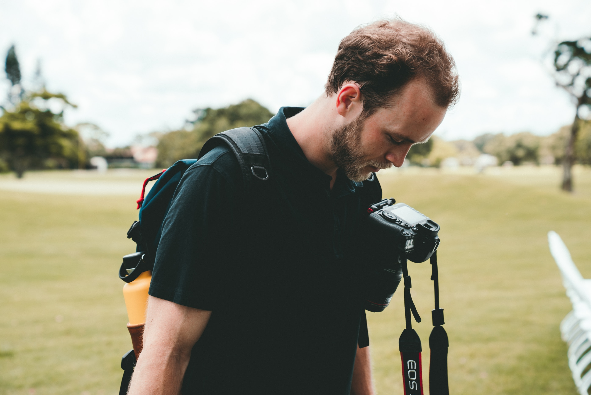
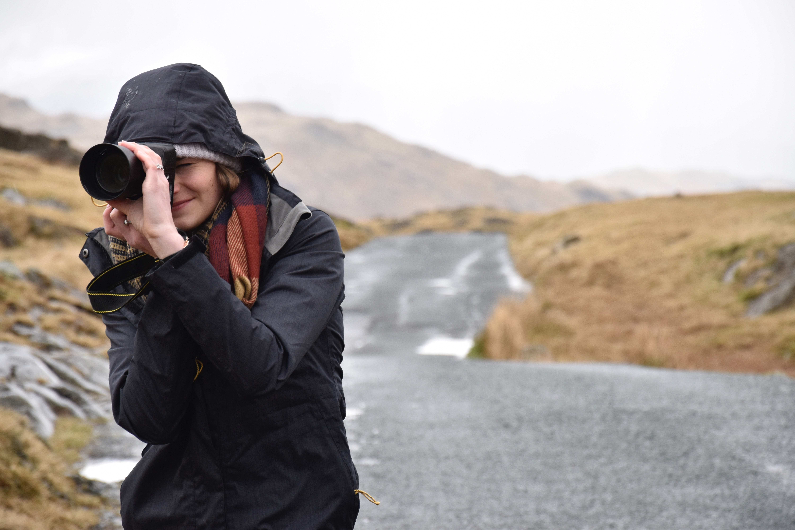

Target Audience
The target audience for this weather app is mainly for those in the college age. I would say around 17-30 would be the age. Because around these ages jobs vary for students the average income made ranges from $7,500 to $42,000 a year. One thing that can be concluded with this age is that most people aim to save money and seek for the cheapest way possible. Education varies from high school degrees to even some with college degrees. The experience for weather topics for this age of people is good. Everyone knows the basics to reading the weather on weather apps.
The audience that I will be aiming for will be remote areas in Idaho. This weather app will have weather information for cities local to Rexburg, Idaho, a college town. College aged kids will most likely use the app everyday for seeing weather information for there walks to class. But, I think most the interaction will be weekends when they want to go out and have fun. This weather site will most likely be accessed on the phone for a quick look at what the weather will be.
Personas
David Linderman
Age: 24
Income: $26,880 a year
Education: Studying Engineering
About Info
David Linderman is currently in college studying engineering. He has a full time job on the side working at a call center. He is very busy balancing his study and work schedule throughout the week. Luckily he has weekends off. During those times he goes out with his friends to hike, rock climb, mountain bike, and pretty much anyting adventorous.
Sarah Witmer
Age: 19
Income: $7,680
Education: Studying Graphic Design
About Info
Sarah is a new college student. She has found herself a part time job working on campus. She is very artistic and has started her degree in graphic design. She is very outgoing and loves to hang out with her roommates. They are all pretty new so they want to do as much as they can together as they can.
Scenarios
- Scenario 1: Planning on walking to school this morning. Will you be able to see how cold it is outside?
- Scenario 2: I want to take pictures today. Will I be able to see how the wind effects my plans?
- Scenario 3: Will I be ablet to see the weather for other locations other than where I live?
- Scenario 4: I am planning a trip for the weekend. Can I see the weather for upcoming days?
- Scenario 5: Will this site allow me to see the highs and lows for the day?